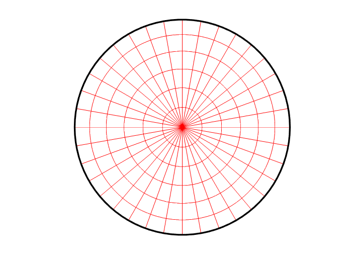
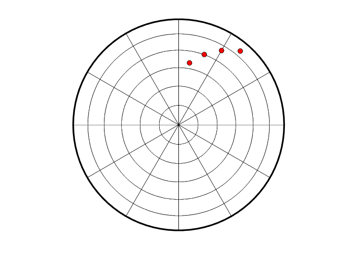

drawstereonet
Stereonet plot
Contents
Syntax
drawstereonet; [X,Y] = drawstereonet(AZIMUTH, TAKEOFF) [X,Y] = drawstereonet(AZIMUTH, TAKEOFF, 'PropertyName',PropertyValue, ...)
Description
Use drawstereonet to generate either equal-area or equal-angle stereonet plot and optionally project points onto the created stereonet.
drawstereonet generates stereonet plot using default values. Use '_ParamName_'-_ParamValue_ pairs to adjust plot characteristics.
[X,Y] = drawstereonet(AZIMUTH, TAKEOFF) projects matrices AZIMUTH and TAKEOFF (of the same size) and returns X and Y matrices of the same size. X and Y can be then used to plot points onto the stereonet.
[X,Y] = drawstereonet(AZIMUTH, TAKEOFF, 'PropertyName',PropertyValue, ...) allows to specify additional parameters.
Parameters
Projection - Stereographic projection
'schmidt' (default) | 'wullf'
Defines projection type for graphical representation of the seismic moment tensor inversion (beach ball). The user may use 'schmidt' (equal area) or 'wullf' (equal angle) projection to plot the beach ball.
Scale - Plotting scale
1.0 (default) | positive scalar value
Defines the maximum radius of created plot.
Grid - Toggle on/off plotting of grid
'on' (default) | 'off'
Allows to toggle on/off generation of grid.
GridColor - Grid color
colorspec
Allows to specify grid color.
GridStepAzimuth - Specify step for grid creation
30 (default) | positive scalar value (<360)
Allows to specify step for plotted grid (along azimuth).
GridStepPlunge - Specify step for grid creation
15 (default) | positive scalar value (<360)
Allows to specify step for plotted grid (along plunge or takeoff angle).
Location - Shift origin of stereonet
[0 0] (default) | two-element horizontal vector
Allows to specify the relative shift of stereonet origin. This may be used to plot multiple stereonet plots in the same figure.
Examples
The following code produces bare stereonet plot with red gridlines that has the azimuthal span of gridlines of 10 degrees:
drawstereonet('GridColor','r','GridStepAzimuth',10);
The following code produces stereonet plot and projects four points onto the created plot using Schmidt (equal-area) projection:
drawstereonet([10 20 30 40],[50 60 70 80],'Projection','schmidt');
The following code just projects input data using default projection and return the output in [X,Y] vectors:
[X,Y] = drawstereonet([10 20 30 40],[50 60 70 80]);